OI Wiki · prijevod · Osnove algoritamaOI Wiki · translation · Algorithm basics
Selection sortSelection sort
Ova stranica kratko predstavlja selection sort (sortiranje odabirom).
Definicija
Selection sort (sortiranje odabirom) jednostavan je i intuitivan algoritam sortiranja. Radi tako da u svakom koraku pronađe \(i\)-ti najmanji element (tj. najmanji element među \(A_{i..n}\)) i zamijeni ga s elementom na \(i\)-tom mjestu niza.

Svojstva
Stabilnost
Stabilnost selection sorta ovisi o konkretnoj implementaciji.
Ako se implementira vezanom listom, budući da su umetanje i brisanje na bilo kojem mjestu vezane liste \(O(1)\), nije potrebna operacija swap (zamjena dvaju elemenata): u svakom koraku iz nesortiranog dijela odaberemo najmanji element (ako ih je više, prvi od njih) i umetnemo ga ispred prvog elementa nesortiranog dijela, čime je stabilnost osigurana.
Implementacija nad nizom obično koristi swap da bi najmanji element premjestila u sortirani dio i tako smanjila broj pomicanja, pa je nestabilna.
Sve implementacije u nastavku temelje se na zamjeni elemenata niza i stoga su nestabilne.
Vremenska složenost
Najbolja, prosječna i najgora vremenska složenost selection sorta jednake su \(O(n^2)\).
Implementacija
Pseudokod
#include <utility>
void selection_sort(int* a, int n) {
for (int i = 1; i < n; ++i) {
int ith = i;
for (int j = i + 1; j <= n; ++j) {
if (a[j] < a[ith]) {
ith = j;
}
}
std::swap(a[i], a[ith]);
}
}
def selection_sort(a, n):
for i in range(1, n):
ith = i
for j in range(i + 1, n + 1):
if a[j] < a[ith]:
ith = j
a[i], a[ith] = a[ith], a[i]
// indeksi niza arr počinju od 1
static void selection_sort(int[] arr, int n) {
for (int i = 1; i < n; i++) {
int ith = i;
for (int j = i + 1; j <= n; j++) {
if (arr[j] < arr[ith]) {
ith = j;
}
}
// swap
int temp = arr[i];
arr[i] = arr[ith];
arr[ith] = temp;
}
}
This page briefly introduces selection sort.
Definition
Selection sort is a simple and intuitive sorting algorithm. It works by finding the \(i\)-th smallest element in each step (that is, the smallest element among \(A_{i..n}\)) and swapping it with the element at position \(i\) of the array.
Properties
Stability
The stability of selection sort depends on the implementation.
If it is implemented with a linked list, then, since insertion and deletion at any position of a linked list are \(O(1)\), no swap operation (exchanging two elements) is needed: in each step select the smallest element of the unsorted part (if there are several, take the first one) and insert it before the first element of the unsorted part; this guarantees stability.
Array implementations usually use swap to move the smallest element into the sorted part in order to reduce the number of moves, so they are unstable.
All implementations given below are based on swapping array elements and are therefore unstable.
Time complexity
The best, average and worst-case time complexity of selection sort are all \(O(n^2)\).
Implementation
Pseudocode
#include <utility>
void selection_sort(int* a, int n) {
for (int i = 1; i < n; ++i) {
int ith = i;
for (int j = i + 1; j <= n; ++j) {
if (a[j] < a[ith]) {
ith = j;
}
}
std::swap(a[i], a[ith]);
}
}
def selection_sort(a, n):
for i in range(1, n):
ith = i
for j in range(i + 1, n + 1):
if a[j] < a[ith]:
ith = j
a[i], a[ith] = a[ith], a[i]
// the indices of arr start from 1
static void selection_sort(int[] arr, int n) {
for (int i = 1; i < n; i++) {
int ith = i;
for (int j = i + 1; j <= n; j++) {
if (arr[j] < arr[ith]) {
ith = j;
}
}
// swap
int temp = arr[i];
arr[i] = arr[ith];
arr[ith] = temp;
}
}